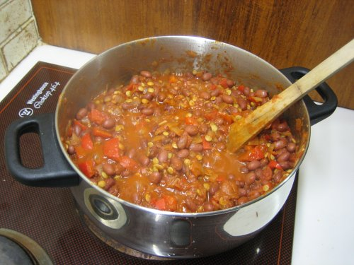

Vegetarian Chili Recipe

By Charles Brooking - Own work, Public Domain, Link
Description:
Beans, tomatoes, and meat substitute make for a hearty stew whose spice will leave you warm for a long time. Onion and garlic give way to peppers, pepper, and cayenne pepper, along with cumin, beans, tomatoes, mushrooms, and (optionally) textured vegetable protein. This stew fills up the whole family!
Ingredients
- Garlic Cloves (2), minced
- White Onion, diced
- Jalapeño Pepper, diced
- Neutral Oil (2 tbsp)
- Black Beans (1 can)
- Kidney Beans (1 can)
- Stewed Tomatoes (1 can)
- Mushrooms (1 lb)
- (optional) Meat substitute grounds (1 lb)
- Black pepper, salt, cumin, cayenne pepper
- (optional) Cheese, grated
Steps
- Add oil to warm cookpot.
- Add garlic, onion, and jalapeño. Cook for several minutes.
- Optionally, add meat substitute and cook until browned.
- Add spice mixture to taste, along with two cans of beans. (Decant liquid beforehand.)
- Add mushrooms and heat until they are cooked through.
- Add stewed tomatoes, including liquid.
- Simmer until mixture is thickened to taste.
- Serve with grated cheese on top and/or diced fresh onion.